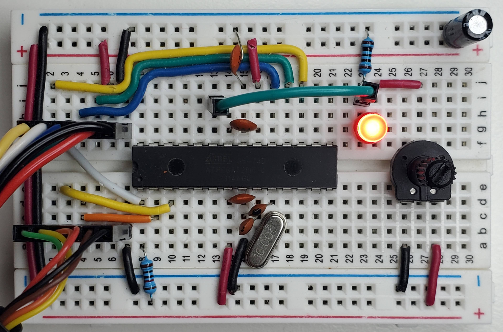
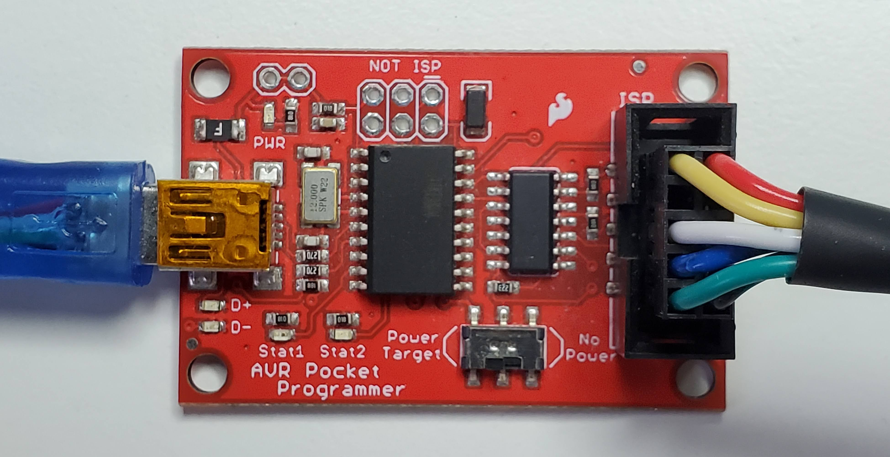
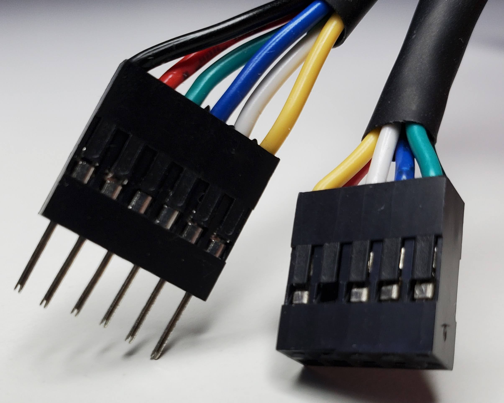
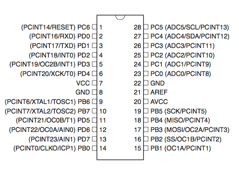

ADC and UART on ATmega328P in AVR-C
Analog-to-digital conversion and UART on ATmega328P in AVR-C on Linux

ATmega328P
The ATmega328P is a Microcontroller Unit used for timing, analog-to-digital conversion, serial communication, PWM, etc. If you have an Arduino UNO, it’s the chip on that board. You can use it for various purposes like a temperature sensor or a controller for DC motors.
Arduino is an ecosystem built around the ATmega328P chip. It comes with Arduino Sketch which is based on the Processing programming language and works with the Arduino IDE. I encourage everyone to use and learn about it. But after making small projects I started wondering: what pinMode() and analogRead() actually do? That’s why I decided to learn low-level AVR-C.
The UNO is a board with a power supply, a USB connection, a serial device, SPI pins, a programmer, a clock, LED indicators, easy-to-use jumper headers and more. It’s possible to program AVR-C directly on the board as I showed in this article.
But instead of using it, we will be putting the ATmega328P directly on a breadboard and upload the code using an external programmer. Most of the information I learned to make this post is from a video series made by one of the best AVR-C / electronics YouTube channels: Human HardDrive.
SparkFun Pocket AVR Programmer
Since we don’t use the Arduino board, we need an AVR programmer. In this article we use the SparkFun Pocket AVR programmer. It comes with a gray cable but I don’t like it because you need a breakout board to plug it into a breadboard. So we’ll create a custom one.
Building the cable
Material and tools: Dupont connectors (1x6p, 2x6p), 24 AWG stranded-wire cable (various colors), male/female pin header crimp terminals, a crimping tool, a multimeter. For crimping technique I suggest to watch this tutorial from Teaching Tech
The programmer has 10 pins but we only need 6:
- VCC (red)
- GND (black)
- MOSI (Yellow)
- RST (White)
- SCK (Blue)
- MISO (Green)


Tip: use the continuity function on your multimeter to make sure the connections are working.
Datasheet
The datasheet contain important information about the ATmega328P.
Pinout

Circuit connections
| Component | Description |
|---|---|
| ATmega328P MCU |
|
| 10 kΩ resistor | Connected to pin 1. |
| 16 MHz crystal | Clock. Connected between pin 9 & 10. |
| 22 pF ceramic capacitor | Between pin 9 and GND. Connect to the nearest GND. |
| 22 pF ceramic capacitor | Between pin 10 and GND. Connect to the nearest GND. |
| 0.1 µF ceramic capacitor | Decoupling capacitor connected between pin 7 & 8 (VCC & GND). |
| 0.1 µF ceramic capacitor | Connected between pin 20 & 22. Stabilizes analog readings. |
| 0.1 µF ceramic capacitor | Connected between GND & pin 21. Stabilizes the reference voltage. |
| 10 µF electrolytic capacitor | Connected between GND & 5V. Bulk capacitor. |
| TTL-232R 5V cable |
|
| 10 kΩ linear potentiometer | Connected to VCC and GND and to LED. |
| 330 Ω resistor | Connected between LED cathode (−) and GND. |
| LED | Connected to pot and to resistor. |
| Breadboard | Use a high-quality breadboard. This one is from Elegoo. |
| Solid wire | Use solid-core 22 AWG wire for a good fit on the breadboard. |
| USB Mini B cable | Connected to the programmer and computer. |
Interrupts
We use the ISR (Interrupt Service Routine) to trigger a block of code when an event happens. The great thing about them is that they run only when they have to and they don’t block other ISR or the main loop contrary to their counterpart that blocks everything:
_delay_ms(100); // Everything stops for 100 msTimer/Counter 8-bit
In the Timer/Counter Control Register A, we set the mode to Clear Timer on Compare (CTC), set the timer to count from 0 to 195 and use a prescaler of 1024.
void setupTimer() {
TCCR0A = (1 << WGM01); // Set to CTC mode
OCR0A = 195; // Count from 0 to 195
TIMSK0 = (1 << OCIE0A); // Enable interrupt
TCCR0B = (1 << CS02 | (1 << CS00)); // Start at 1024 prescalar
}In this configuration, we sample ADC every 12 ms:
16000000 / 1024 = 15625 Hz
1 / 15625 = 64 µs
OCR0A + 1 = 196
196 × 64 µs = 12.54 ms
Inside the interrupt we force the ADC to use channel 0 and start the ADC conversion.
ISR(TIMER0_COMPA_vect) {
channelADC = 0; // Reset to ADC0
ADMUX = (ADMUX & 0xF0) | channelADC; // Force start on ADC0, 0xF0 = 11110000
ADCSRA |= (1 << ADSC); // Start conversion
}Analog-to-Digital converter
The ADC converts an analog input voltage to a 10-bit digital value.
In the ADC Control and Status Register A, we enable ADC, enable ADC interrupt and set the ADC prescaler to 64.
void setupADC() {
ADMUX = (1 << REFS0); // Use Vcc as reference
ADCSRA = (1 << ADEN) | (1 << ADIE) | (1 << ADPS1) | (1 << ADPS2); // Enable ADC, ADC interrupt, and prescaler
DIDR0 = (1 << ADC0D) | (1 << ADC1D); // Disable digital input on both ADC0 and ADC1 to reduce noise
}16 MHz / 64 = 250 kHz.
When the ADC conversion is triggered, we read the ADC result. If we finish ADC0, we switch to ADC1 and start the conversion again so we can get both channels. In this example, we write a CSV-style header, convert raw values (from 0 to 1023) to millivolts, convert the integers to strings, concatenate them on one line and queue it to the next UART transfer.
// Analog digital converter
ISR(ADC_vect) {
valuesADC[channelADC] = ADC;
if (channelADC == 0) {
channelADC = 1;
ADMUX = (ADMUX & 0xF0) | 1; // Set to ADC1, 0xF0 = 11110000
ADCSRA |= (1 << ADSC);
}
else {
if (firstPass == 1) {
writeSerial("\n\n"); // Flush the buffer
writeSerial("adc0 (mv),adc1 (mv)\n");
firstPass = 0;
}
channelADC = 0;
char line[32];
char buffer0[16], buffer1[16];
uint16_t millivolt0 = (valuesADC[0] * 5000UL) / 1023;
uint16_t millivolt1 = (valuesADC[1] * 5000UL) / 1023;
millivoltToCharArray(millivolt0, buffer0);
millivoltToCharArray(millivolt1, buffer1);
concatenateBufferToLine(line, buffer0, buffer1); // Put both values on one line
writeSerial(line);
}
}Serial (UART)
The Universal Synchronous and Asynchronous serial Receiver and Transmitter is a serial communication device.
In the USART Control and Status Register 0 B, we set the bits to enable the interrupt and the transmission.
In the USART Control and Status Register 0 C, we set the bits to get an 8-bit data frame.
And we configure how quickly to send and receive bits.
void setupUART() {
UCSR0B = (1 << TXEN0) | (1 << TXCIE0); // Enable transmitter and interrupt
UCSR0C = (1 << UCSZ01) | (1 << UCSZ00); // Set 8-bit data frame
UBRR0H = (BRC >> 8);
UBRR0L = BRC;
}Finally, we send the characters to the hardware UART register using a circular buffer.
void writeSerial(char c[]) {
// Append serial
for (uint8_t i = 0; i < strlen(c); i++) {
serialTX.buffer[serialTX.writePos] = c[i];
serialTX.writePos++;
if (serialTX.writePos >= TX_BUFFER_SIZE) {
serialTX.writePos = 0;
}
}
// Transmit serial
if (UCSR0A & (1 << UDRE0)) { // Wait for transmit buffer to be ready
UDR0 = serialTX.buffer[serialTX.readPos];
serialTX.readPos = (serialTX.readPos + 1) % TX_BUFFER_SIZE;
}
}
ISR(USART_TX_vect) {
if (serialTX.readPos != serialTX.writePos) {
UDR0 = serialTX.buffer[serialTX.readPos];
serialTX.readPos++;
if (serialTX.readPos >= TX_BUFFER_SIZE) {
serialTX.readPos = 0;
}
}
}I hope it gives some ideas about how the ATmega328P works. Basically, we flip bits (1 or 0) in registers using bit manipulation to configure the MCU and we leverage hardware interrupts to achieve desired outcome.
At the end, we are able to capture the voltage of the LED while turning the potentiomer.
Print the serial buffer of your computer using this command:
cat /dev/ttyUSB0The full code is in the next section. Here’s a demo video of what to expect from the circuit:
Installation
- avrdude: a program for uploading code to Atmel AVR microcontrollers
- gcc-avr: GNU C compiler (cross compiler for avr)
- binutils-avr: Binary utilities supporting Atmel’s AVR targets
- avr-libc: Standard C library for Atmel AVR development
- make: GNU utility that controls the generation of executable and other target files
sudo apt update
sudo apt install avrdude gcc-avr binutils-avr avr-libc make Compile and upload
mkdir bin // Create a new directory 'bin' in the same location that the 'main.c' file
make // Compile the program using Makefile
make upload // Compile and upload the program to the ATmega328P
// Optional
sudo usermod -aG dialout $USER // You may need to give your user permission to use serial devices# Makefile
MCU = atmega328p
CC = avr-gcc
OBJCOPY = avr-objcopy
AVRDUDE = avrdude
PROGRAMMER = usbtiny
CFLAGS = -Os -mmcu=$(MCU)
LDFLAGS = -mmcu=$(MCU)
TARGET = main
default: bin/$(TARGET).hex
bin/$(TARGET).o: $(TARGET).c
$(CC) $(CFLAGS) -c -o $@ $<
bin/$(TARGET).elf: bin/$(TARGET).o
$(CC) $(LDFLAGS) -o $@ $^
bin/$(TARGET).hex: bin/$(TARGET).elf
$(OBJCOPY) -O ihex -R .eeprom $< $@
upload: bin/$(TARGET).hex
$(AVRDUDE) -c $(PROGRAMMER) -p $(MCU) -B 5 -U flash:w:$<:i -V
clean:
rm -f bin/*.o bin/*.elf bin/*.hex
.PHONY: default upload cleanCode
Use Vim, VSCode or the code editor of your choice.
// main.h
#include <string.h>
#include <avr/io.h>
#include <avr/interrupt.h>
#define F_CPU 16000000UL
#define BUAD 9600
#define BRC ((F_CPU / 16 / BUAD) - 1)
#define TX_BUFFER_SIZE 128
typedef struct {
char buffer[TX_BUFFER_SIZE];
uint8_t readPos;
uint8_t writePos;
} SerialTX;
void setupTimer(void);
void setupADC(void);
void setupUART(void);
void startADC(void);
void writeSerial(char c[]);
void millivoltToCharArray(uint16_t millivolt, char *millivoltBuffer);
void concatenateBufferToLine(char *line, char *buffer0, char *buffer1);// main.c
#include "main.h"
SerialTX serialTX = {.readPos = 0, .writePos = 0};
volatile uint16_t valuesADC[2];
volatile uint8_t channelADC = 0;
uint8_t firstPass = 1;
int main(void) {
setupTimer();
setupADC();
setupUART();
sei(); // Magic interrupt
while (1) {
// Run program loop
}
return 0;
}
void setupTimer() {
TCCR0A = (1 << WGM01); // Set to CTC mode
OCR0A = 195; // Count from 0 to 195
TIMSK0 = (1 << OCIE0A); // Enable interrupt
TCCR0B = (1 << CS02 | (1 << CS00)); // Start at 1024 prescalar
}
void setupADC() {
ADMUX = (1 << REFS0); // Use Vcc as reference
ADCSRA = (1 << ADEN) | (1 << ADIE) | (1 << ADPS1) | (1 << ADPS2); // Enable ADC, ADC interrupt, and prescaler
DIDR0 = (1 << ADC0D) | (1 << ADC1D); // Disable digital input on both ADC0 and ADC1 to reduce noise
}
void setupUART() {
UCSR0B = (1 << TXEN0) | (1 << TXCIE0); // Enable transmitter and interrupt
UCSR0C = (1 << UCSZ01) | (1 << UCSZ00); // Set 8-bit data frame
UBRR0H = (BRC >> 8);
UBRR0L = BRC;
}
void startADC() {
channelADC = 0; // Reset to ADC0
ADMUX = (ADMUX & 0xF0) | channelADC; // Force start on ADC0, 0xF0 = 11110000
ADCSRA |= (1 << ADSC); // Start conversion
}
// Timer
ISR(TIMER0_COMPA_vect) {
startADC();
}
// Analog digital converter
ISR(ADC_vect) {
valuesADC[channelADC] = ADC;
if (channelADC == 0) {
channelADC = 1;
ADMUX = (ADMUX & 0xF0) | 1; // Set to ADC1, 0xF0 = 11110000
ADCSRA |= (1 << ADSC);
}
else {
if (firstPass == 1) {
writeSerial("\n\n"); // Flush the buffer
writeSerial("adc0 (mv),adc1 (mv)\n");
firstPass = 0;
}
channelADC = 0;
char line[32];
char buffer0[16], buffer1[16];
uint16_t millivolt0 = (valuesADC[0] * 5000UL) / 1023;
uint16_t millivolt1 = (valuesADC[1] * 5000UL) / 1023;
millivoltToCharArray(millivolt0, buffer0);
millivoltToCharArray(millivolt1, buffer1);
concatenateBufferToLine(line, buffer0, buffer1); // Put both values on one line
writeSerial(line);
}
}
// UART
ISR(USART_TX_vect) {
if (serialTX.readPos != serialTX.writePos) {
UDR0 = serialTX.buffer[serialTX.readPos];
serialTX.readPos++;
if (serialTX.readPos >= TX_BUFFER_SIZE) {
serialTX.readPos = 0;
}
}
}
void writeSerial(char c[]) {
// Append serial
for (uint8_t i = 0; i < strlen(c); i++) {
serialTX.buffer[serialTX.writePos] = c[i];
serialTX.writePos++;
if (serialTX.writePos >= TX_BUFFER_SIZE) {
serialTX.writePos = 0;
}
}
// Transmit serial
if (UCSR0A & (1 << UDRE0)) { // Wait for transmit buffer to be ready
UDR0 = serialTX.buffer[serialTX.readPos];
serialTX.readPos = (serialTX.readPos + 1) % TX_BUFFER_SIZE;
}
}
void millivoltToCharArray(uint16_t millivolt, char *millivoltBuffer) {
char buffer[6];
if (millivolt == 0) {
millivoltBuffer[0] = '0';
millivoltBuffer[1] = '\0';
return;
}
uint8_t i = 0;
while (millivolt > 0) {
buffer[i++] = (millivolt % 10) + '0';
millivolt /= 10;
}
// Reverse
for (uint8_t j = 0; j < i; j++) {
millivoltBuffer[j] = buffer[i - j - 1];
}
millivoltBuffer[i] = '\0';
}
void concatenateBufferToLine(char *line, char *buffer0, char *buffer1) {
uint8_t i = 0;
while (buffer0[i] != '\n' && buffer0[i] != '\0') {
line[i] = buffer0[i];
i++;
}
line[i++] = ',';
uint8_t j = 0;
while (buffer1[j] != '\n' && buffer1[j] != '\0') {
line[i++] = buffer1[j++];
}
line[i++] = '\n';
line[i] = '\0';
return;
}